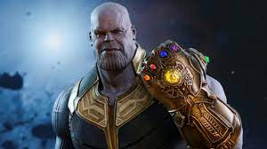
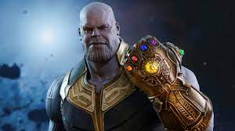

| Durata | Genere | Anno di uscita | Regista |
|---|---|---|---|
| 181 minuti | Azione, Fantascienza, Avventura | 2019 | Anthony, Joe Russo |
In seguito allo schiocco di dita di Thanos, Clint Barton vede scomparire tutta la sua famiglia.
Ventidue giorni più tardi, Tony Stark e Nebula, che si trovano sull'astronave dei Guardiani della Galassia, vengono salvati e portati sulla Terra, al quartier generale degli Avengers, da Capitan Marvel.
I tre si ricongiungono con Pepper Potts, Steve Rogers, Natasha Romanoff, Bruce Banner, James Rhodes, Thor e Rocket.
Il gruppo, speranzoso di utilizzare le Gemme per riportare tutti in vita, localizza Thanos, ma, una volta raggiunto, quest'ultimo spiega di averle distrutte sfruttando il loro stesso potere,
cosa che gli è quasi costata la vita.
Appreso ciò, Thor, furioso, lo decapita.
 

Trascorrono cinque anni. Ant-man (Paul Rudd) riesce a liberarsi dal regno quantico nel quale era rimasto intrappolato. Per lui sono passate solo cinque ore, quindi rimane sbalordito dal racconto di Steve Rogers e della Vedova Nera, gli unici Avengers rimasti al Quartier Generale. Ant-Man, però, ha una brillante idea e propone loro di sfruttare il regno quantico per tornare indietro nel tempo, trovare le Gemme dell'Infinito e distruggerle prima che Thanos riesca a impossessarsene. Sono tutti concordi che l'unico genio in grado di progettare la missione sia Tony Stark, che nel frattempo si è ritirato dalle scene per vivere con Pepper (Gwyneth Paltrow) e la loro bambina. Ma Tony non cede, non vuole farsi coinvolgere, non c'è più posto nella sua vita per Iron Man e le missioni da supereroe. Il team cerca allora l'aiuto di Banner, che nel frattempo ha trovato il modo di assumere le sembianze di Hulk, mantenendo però la lucidità. Bruce si rivela più collaborativo, ma troppo inesperto e seguono una serie di tentativi falliti di viaggio nel tempo. La soluzione arriva proprio da Tony Stark, che si presenta alla sede centrale con un orologio GPS da lui ideato per viaggiare nel regno quantico e che si rivela funzionare perfettamente. Una volta recuperati Barton e Thor e riunita la squadra, gli Avengers si divideranno per recuperare e distruggere le Gemme, prima che Thanos riesca a possederle, impedendo che metà dei viventi vengano cancellati. Ma niente andrà come previsto...